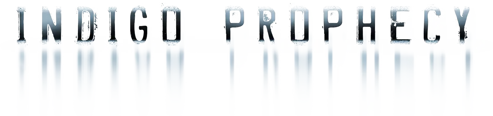

QUANTIC DREAM · AVENTURA NARRATIVA / QTE · 2005 (PS4: 2015)

GUIA DE PLATINA PT-BR
TEM PLATINA
49 TROFÉUS
100% OFFLINE
5/10 DIFICULDADE
DIFICULDADE ESTIMADA
1 TRIVIAL
5/10 — MÉDIA
10 BRUTAL
Nenhuma sequência é mecanicamente difícil — o jogo é baseado em QTEs (Quick Time Events)
generosos e possui vidas extras via crucifixos. A dificuldade real
está em organizar as runs: alguns troféus exigem estados narrativos
opostos (não dá pra ter os dois no mesmo playthrough) e o troféu de completar tudo
no Difícil pode ser instável via seleção de capítulo.
🥇 "O CAMINHO MENOS PERCORRIDO" — CUIDADO COM O DIFÍCIL
Este troféu de Ouro exige completar todos os capítulos no modo Difícil.
Ele é conhecido por não desbloquear corretamente quando os capítulos são refeitos via seleção de capítulo
fora de ordem. O caminho mais seguro é definir o Difícil desde o menu inicial
e jogar a campanha inteira de forma contínua, do início ao fim, nessa dificuldade.
🥇 "TODOS OS FINAIS" — 3 FINAIS MUTUAMENTE EXCLUSIVOS
O capítulo final tem 3 finais possíveis (Futuro Brilhante, Futuro Congelado,
Futuro Incerto) e só é possível ver um por vez. Depois de terminar o jogo, use a
seleção de capítulo para refazer o capítulo final mais duas vezes, fazendo
escolhas diferentes a cada vez, até ver os três.
🥈 "OBCECADO" — COLETE AS CARTAS NUMA ÚNICA RUN
Colecionar todas as Cartas de Tarô costuma funcionar melhor quando feito
dentro de um único playthrough completo em vez de via seleção de capítulo —
jogadores relatam inconsistência ao tentar reunir as cartas espalhando a coleta entre capítulos avulsos.
⚠️ DADOS NÃO VERIFICADOS NESTE GUIA
A contagem exata de Cartas de Tarô colecionáveis não pôde ser confirmada com
segurança nas fontes consultadas — por isso aparece como "?" no card acima em vez de um número inventado.
Além disso, os nomes e descrições dos 49 troféus em PT-BR são traduções
próprias fiéis ao texto oficial em inglês (confirmado via PSNProfiles, TrueTrophies, PlayStationTrophies e
AbsolutCheats) — não a string literal do Exophase em português, que não foi possível acessar para este
título. A contagem de troféus e a distribuição por tipo (1 Platina, 2 Ouro, 6 Prata, 40 Bronze) estão
confirmadas e corretas.
🔗 FONTES PARA VERIFICAR
▸ PSNProfiles: psnprofiles.com/trophies/5131-indigo-prophecy
▸ TrueTrophies: truetrophies.com/game/FAHRENHEIT--Indigo-Prophecy/trophies
▸ PlayStationTrophies.org: playstationtrophies.org/game/indigo-prophecy/guide/
▸ Exophase: exophase.com (busque "Indigo Prophecy")
Explore como cada escolha dentro de um capítulo afeta o estado mental de Lucas e quais troféus
cada rota prepara, trava ou conquista — em tempo real, sem precisar
alternar entre guias de texto separados. Comece pelo capítulo "O Assassinato";
os demais capítulos no seletor ainda estão sendo montados e aparecem marcados como
🔒 Em breve.
ℹ️ NOME E DESCRIÇÃO OFICIAIS EM PT-BR (EXOPHASE)
Nome e descrição de cada troféu abaixo são o texto oficial em português do Brasil usado pelo
Exophase. A lista está em ordem de avanço natural do jogo (mesma ordem oficial de
desbloqueio), do primeiro capítulo até os troféus de pós-créditos e finais — quem tem mais
importância desde o início vem primeiro. Tipo (Ouro/Prata/Bronze), capítulo de referência e as dicas
de "como conseguir" são complementos deste guia, confirmados via múltiplas fontes.
✅ NENHUM TROFÉU É PERMANENTEMENTE PERDÍVEL
Indigo Prophecy libera a seleção de capítulos desde o início, então tecnicamente nada se
perde para sempre. Os itens abaixo não são perdíveis de verdade — são pontos de atenção especial
onde escolhas de um playthrough bloqueiam um troféu oposto até você refazer aquele trecho separadamente.
🃏 31 CARTAS NA CAMPANHA + 200 PONTOS DE BÔNUS NOS CRÉDITOS
Cada carta abaixo mostra o capítulo oficial (numeração interna do jogo entre colchetes),
quem a encontra e quantos pontos ela vale. Os pontos são usados no menu
Bônus para desbloquear arte da galeria (2 pts/imagem), trilha sonora (5 pts/faixa) e vídeos (20 pts/vídeo)
— todos troféus de Prata — e servem de "moeda" para o troféu "Obsessivo". Nenhuma carta
é obrigatória para a Platina: dá pra pular quem não quiser, já que os troféus de Prata não exigem
coletar 100% delas.